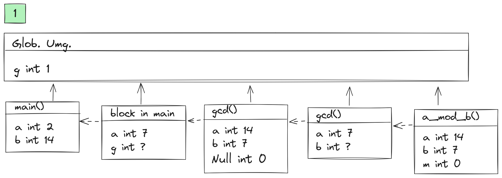
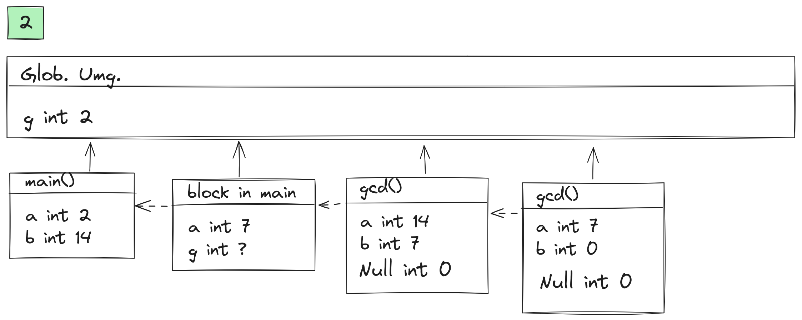
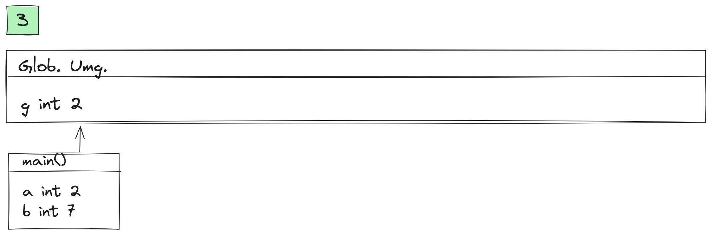

Zettel 05
Aufgabe 1
Siehe Figure 1
  
Aufgabe 2
2.1
folgendes Code realisiert die float version der Determinante-funktion:
#include "fcpp.hh"
float determinante(
float a,
float b,
float c,
float d
)
{
return a * d - b * c;
}
int main()
{
return print(determinante(
100, 0.01,
-0.01, 100
));
}Ergebniss: 10000
Erklaerung: Das exakte Ergebniss der Berechnung \(10000.0001 = 1.00000001\times 10^4\) kann nicht mit 32 bit float dargestellt werden. Eine 32-bit float ist eine Bitfolge der Form S|E|M, wobei S der “sign-bit”, 8 E’s die ‘Exponenten-bits’ und 23 M’s die ‘Mantisse-bits’ sind. Diese bitfolge wird interpretiert als:
\[ [S|E|M]_{FP32} := (-1)^S\times 1.M \times 2^{E - 127} \]
Die exakte Darstellung von 1000.0001 in 2er Basis lautet jedoch \(1.00111000\ldots11010001101101110001 \times 2^{13}\). Hier gibt mehr als 23 Stellen nach der Komma, die der Mantisse entsprechen. Jedoch erlaubt float 23 Stellen fuer die Mantisse. Deshalb kann diese Bitfolge nicht genau representiert werden und wird stattdessen moeglichst praezis gerundet.
Die Rundung erfuellt die Eigenschaft
\[ rd(x) = x(1 + r), r < eps \]
Wobei \(r\) der relative Rundungsfehler, \(eps\) die Maschinen-genauigkeit ist. Fuer float lautet dies \(2^{-23} \approx 10^{-7}\).
Die Rundung \(rd(1000.0001) = 1000\) erfuellt tatsaechlich diese Eigenschaft, da \(r = \frac{.0001}{10000} = 10^{-8}\)
Die double Version des Programms
#include "fcpp.hh"
double determinante(
double a,
double b,
double c,
double d
)
{
return a * d - b * c;
}
int main()
{
return print(determinante(
100, 0.01,
-0.01, 100
));
}Liefert das mathematisch exakte Ergebniss \(10000.0001\). Da, der Datentyp double die 64-bit Fliesskommazahlen realisiert, hat es die Maschinengenauigkeit \(eps = 2^{-52}\). Somit koennen mehr siginifikanten Stellen representiert werden als mit 32-bit FP Zahlen. Die Zahl \(10000.0001\) hat immer noch keine exakte Darstellung aber da, \(eps\) viel kleiner ist liefert die Rundung die exakte Darstellung.
Aufgabe 3
3.1
Aequivalente while-Version lautet:
int fib(int n)
{
int a = 0;
int b = 1;
int i = 0;
//invariante: a == fib(i) && b == fib(i + 1) && i <= n
while (i < n){
int t = a + b;
a = b;
b = t
i = i + 1;
}//i == n => a == fib(n)
return a;
}- Schleifenvektor: \(v = (a, b, t, i)\)
- Schleifenbedingung: \(B(v) :\equiv i < n\)
- Schleifentransformator: \(H(a, b, t, i) = (b, a + b, a + b, i + 1)\)
3.2
- Vorbedingung: \(P(n) :\equiv 0 \leq n\)
- Behauptung: \(Inv(v) :\equiv (a = fib(i)) \wedge (b = fib(i + 1)) \wedge (i\leq n)\)
- Nachbedingung: \(Q(v, n) :\equiv a = fib(n)\)
Beweis:
Bezeichne \(v_j := H^j(v)\)
- (IB): Vor der ersten Iteration gilt: \(v_0 = (a_0, b_0, t_0, i_0) = (0, 1, ?, 0)\) und somit:
\[\begin{align*} a_0 &= 0 \\ &= fib(0) \tag{Def von fib} \\ &= fib(i_0) \\ \\ b_0 &= 1 \\ &= fib(1) \tag{Def von fib} \\ &= fib(i_0 + 1) \\ \\ i_0 &= 0 \leq n \tag{Vorbedingung $P(n)$} \end{align*}\]
Somit gilt \(Inv(v_0)\)
(IS): Gelte die Invariante vor einer \(k\)-ten Iteration, d.h \[Inv(v_k) :\equiv (a_k = fib(i_k)) \wedge (b_k = fib(i_k + 1)) \wedge (i_k \leq n)\] z.z.: \(Inv(v_k) \wedge B(v_k) \Rightarrow Inv(v_{k + 1})\)
Bew: Es gilt: \[\begin{align*} Inv(v_k) \wedge B(v_k) \Leftrightarrow& a_k = fib(i_k) \wedge b_k = fib(i_k + 1) \wedge i_k \leq n \wedge i_k < n \tag{Def von $Inv(v)$ und $B(v)$} \\ \Rightarrow& a_k = fib(i_k) \wedge b_k = fib(i_k + 1) \wedge i_k < n \tag{Arithmetik} \\ \Rightarrow& a_k + b_k = fib(i_k) + fib(i_k + 1) \wedge b_k = fib(i_k + 1) \wedge i_k + 1 \leq n \tag{Arithmetik} \\ \Leftrightarrow& a_k + b_k = fib(i_k + 2) \wedge b_k = fib(i_k + 1) \wedge i_k + 1 \leq n \tag{Def von $fib$} \\ \Leftrightarrow& a_k + b_k = fib((i_k + 1) + 1) \wedge b_k = fib(i_k + 1) \wedge i_k + 1 \leq n \tag{Arithmetik} \\ \Leftrightarrow& b_{k + 1} = fib(i_{k + 1} + 1) \wedge a_{k + 1} = fib(i_{k + 1}) \wedge i_{k + 1} \leq n \tag{Def von $H$ und $v_{k + 1} = H(v_k)$} \\ \Leftrightarrow& Inv(v_{k + 1}) \quad \blacksquare \tag{Def von $Inv(v)$} \end{align*}\]
Nach dem Verlassen der Schleifen bei einem allgemeinen Schleifenvektor \(v\) gilt somit: \[\begin{align*} Inv(v) \wedge \neg B(v) &\Leftrightarrow (a = fib(i) \wedge b = fib(i + 1) \wedge i \leq n) \wedge \neg(i < n) \tag{Def von $Inv$ und $B$} \\ &\Leftrightarrow (a = fib(i) \wedge b = fib(i + 1)) \wedge (i \leq n \wedge i \geq n) \tag{DeMorgan} \\ &\Leftrightarrow (a = fib(i) \wedge b = fib(i + 1)) \wedge i = n \tag{Arithmetik} \\ &\Rightarrow a = fib(n) \tag{Aussagenlogik} \\ &\Leftrightarrow Q(v, n) \quad \blacksquare \tag{Def der Nachbedingung $Q$} \end{align*}\]
Aufgabe 4
Wir betrachten 4 Faelle:
Fall \(a, b \geq 0\):
\[\begin{align*} s_n(d_n(a) \cdot d_n(b)) &= s_n(a \cdot b) \tag{Def $d_n$} \\ &= a \cdot b \tag{$ab \leq 2^{n - 1} < 2^n$, Def $s_n$} \\ &= d_n(ab) \tag{$ab \geq 0$} \end{align*}\]
Fall \(a, b < 0\):
\[\begin{align*} s_n(d_n(a)\cdot d_n(b)) &= s_n((2^n - |a|)(2^n - |b|)) \tag{Def $d_n$} \\ &= s_n((2^n +a)(2^n + b)) \tag{$a, b < 0$} \\ &= s_n(4^n + 2^n(a + b) ab) \\ &= s_n(2^n(2^n + a + b) + ab) \\ &= a\cdot b \tag{$0\leq 2^n + a + b < 2^n$, Def $s_n$} \\ &= d_n(ab) \tag{$ab > 0$, Def $d_n$} \end{align*}\]
Fall o.B.d.A \(a < 0, b > 0\):
\[\begin{align*} s_n(d_n(a)d_n(b)) &= s_n((2^n - |a|)b) \tag{$a < 0$, Def $d_n$} \\ &= s_n((2^n + a)b) \tag{$a < 0$} \\ &= s_n(2^nb + ab) \\ &= s_n(2^nb - |ab|) \tag{$ab < 0$} \\ &= s_n(2^nb - 2^n + (2^n - |ab|)) \\ &= s_n(2^n(b - 1) + (2^n - |ab|)) \\ &= 2^n - |ab| \tag{$b\geq 1$, Def $s_n$} \\ &= d_n(ab) \tag{Def $d_n$} \end{align*}\]
Fall o.B.d.A \(b = 0\):
\[\begin{align*} s_n(d_n(a)d_n(0)) &= s_n(d_n(a)\cdot 0) \\ &= s_n(0) \\ &= 0 \\ &= d_n(0) \\ &= d_n(a\cdot 0) \end{align*}\]